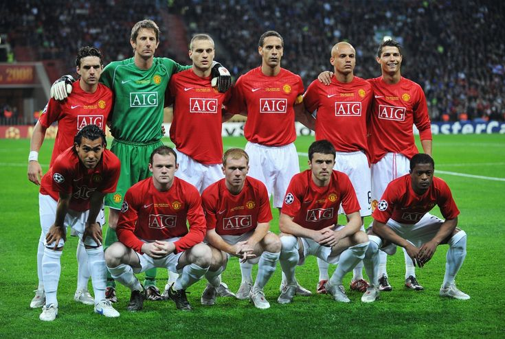
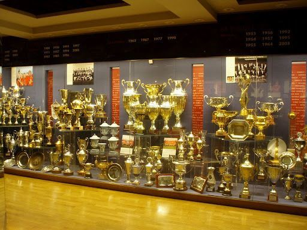

Sejarah

Tim pertama kali dibentuk dengan nama Newton Heath Lancashire and Yorkshire Railway F.C. pada 1878 sebagai tim karya Lancashire dan Yorkshire, stasiun kereta api di Newton Heath.[12] Kaus tim berwarna hijau - emas. Mereka bermain di sebuah lapangan kecil di North Road, dekat stasiun kereta api Piccadilly Manchester selama lima belas tahun, sebelum pindah ke Bank Street di kota dekat Clayton pada 1893. Tim sudah memasuki kompetisi sepak bola tahun sebelumnya dan mulai memutuskan hubungannya dengan stasiun kereta api, menjadi perusahaan mandiri,
mengangkat seorang sekretaris perkumpulan dan pengedropan "L&YR" dari nama mereka untuk menjadi Newton Heath F.C saja.
Old Trafford

Desa Kembang Kuning Diresmikan Sebagai Salah Satu Desa Wisata di Wilayah Kabupaten Lombok Timur Provinsi Nusa Tenggara Barat Oleh Ibu Wakil Gubernur Provinsi Nusa Tenggara Barat Dr. Hj. Sitti Rohmi Djalillah Pada Tangggal 21 September 2019 yang ditandai dengan Penandatanganan Prasasti Sebagai Salah Satu Desa Wisata yang ada di Provinsi Nusa Tenggara Barat.
Desa Wisata Kembang Kuning terletak dibawah kaki Gunung Rinjani dengan curah hujan 3000mm, suhu rata-rata 25ºC dan tinggi 600/800 mdpl. Sehingga mejadi tempat yang subur, mempunyai panorama alam yang indah, udara yang sejuk sehingga bisa menjadi daya tarik wisatawan lokal maupun mancanegara.
Statistik

1. **Liga Inggris (English Premier League):**
- Manchester United telah memenangkan sejumlah gelar Liga Inggris sepanjang sejarah klub. Mereka meraih sukses besar di bawah manajer seperti Sir Matt Busby dan Sir Alex Ferguson.
2. **Liga Champions UEFA (UEFA Champions League):**
- Manchester United pernah meraih gelar Liga Champions sebanyak tiga kali, pada musim 1967-68, 1998-99, dan 2007-08.
3. **Piala FA (FA Cup):**
- Klub ini telah memenangkan Piala FA beberapa kali, meraih kesuksesan di kompetisi piala tertua di dunia ini.
4. **Piala Liga Inggris (EFL Cup):**
- Manchester United juga telah berhasil dalam kompetisi Piala Liga Inggris.
5. **Piala UEFA (sekarang Europa League):**
- Klub ini telah meraih sukses di tingkat Eropa, termasuk kemenangan dalam Piala UEFA (sekarang dikenal sebagai Liga Europa) pada musim 2016-17.
6. **Piala Interkontinental dan Piala Dunia Antar-Klub FIFA:**
- Manchester United pernah menjadi juara Piala Interkontinental dan Piala Dunia Antar-Klub FIFA.
7. **Piala Charity/Community Shield:**
- Klub ini juga meraih sukses dalam Piala Charity/Community Shield.